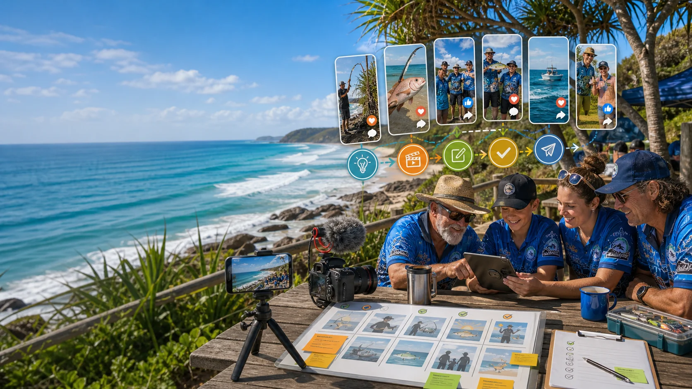
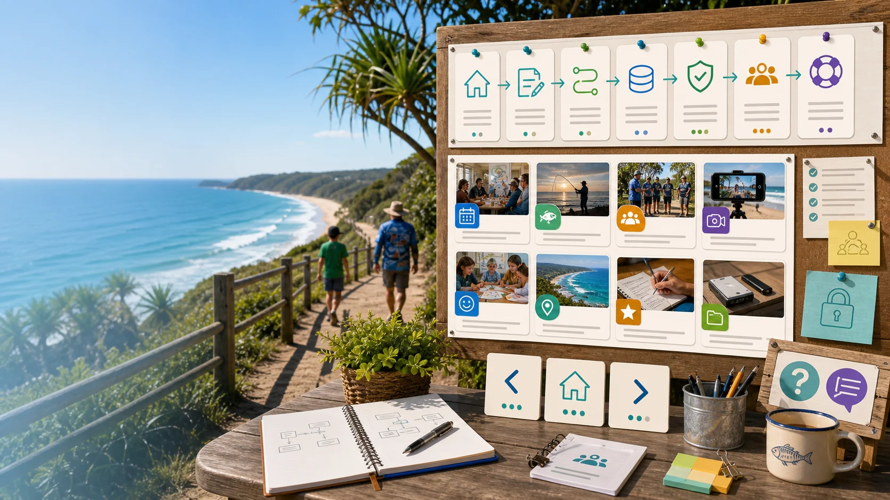

Answer
Fill in a short plain-English form. No coding needed.
Create `.md` files for meetings, memberships, events, grants, storage maps and social content.
The form turns a normal human explanation into a clear Markdown handoff file. The file tells AI what to do, where the source material lives and what must stay private.
Fill in a short plain-English form. No coding needed.
Get a Markdown file ready to paste into an AI tool.
Ask ChatGPT, Claude, Gemini, Copilot or another tool for help.
The site is a small, calm toolkit. Each page explains one part of the system and points to the next useful step.
Start with the closest match. The generated Markdown can still be edited before anyone uses it with AI.
Meetings, tasks, plans, reports and updates.
Competitions, weigh-ins, results and calendars.
Join, renew, help out, roles and shared access.

YouTube Shorts, TikTok, Instagram, Facebook and stories.

Learning, fun facts, colouring sheets and activities.
Committee drives, public exports, backups and archives.
Applications, reports, evidence and acquittals.
Guides, maps, safety notes and things to see and do.
Good AI help starts with the right source, the right privacy boundary and the right human review.
The 2026 AGM material points to a simple truth: the club has a strong digital base, but needs shared access, helpers, better calendar discipline and repeatable records.
Use fewer, clearer forms and stop making people decode messy notes.
Make the next step obvious so 3 or 4 helpers can safely assist.
Keep source files, decisions, reviews and public outputs connected.